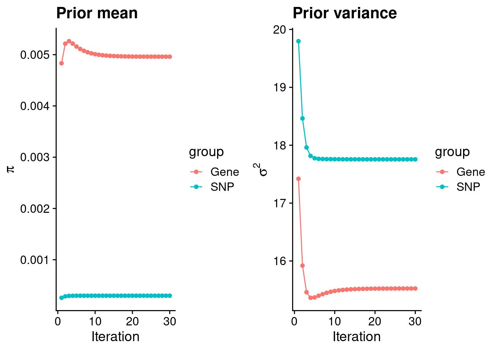
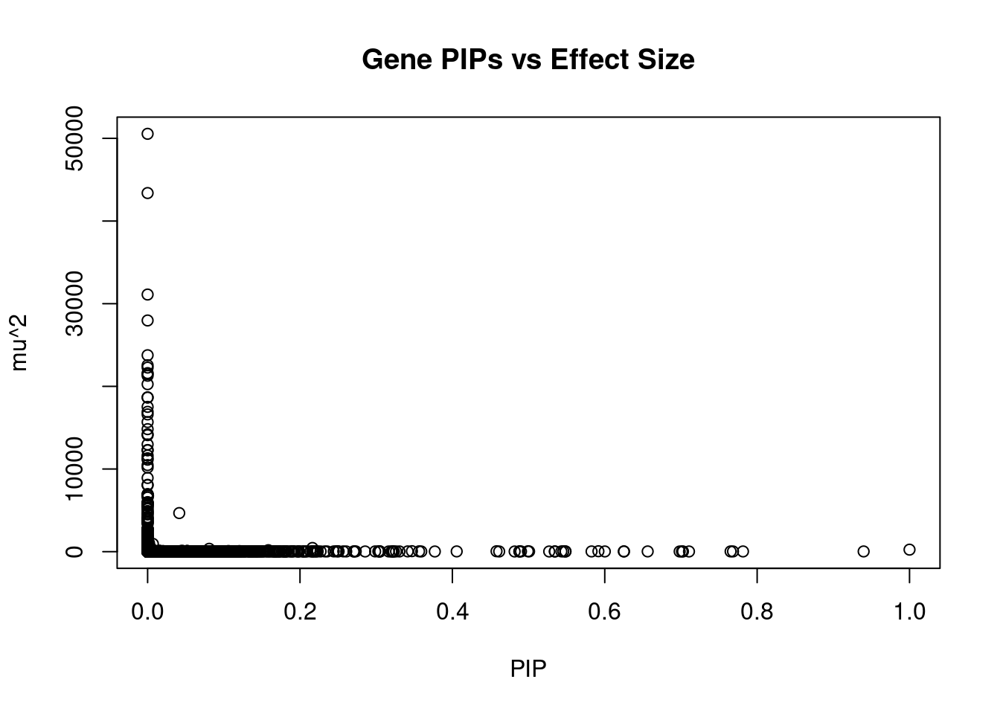
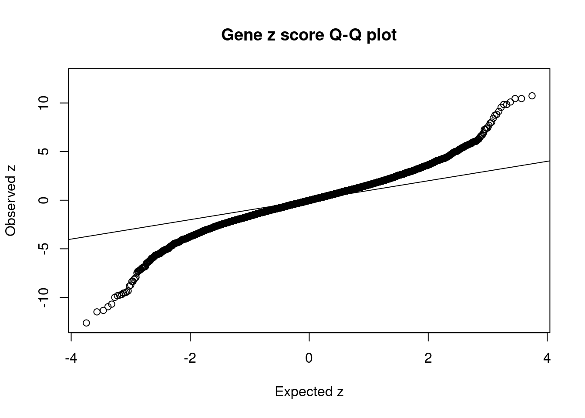
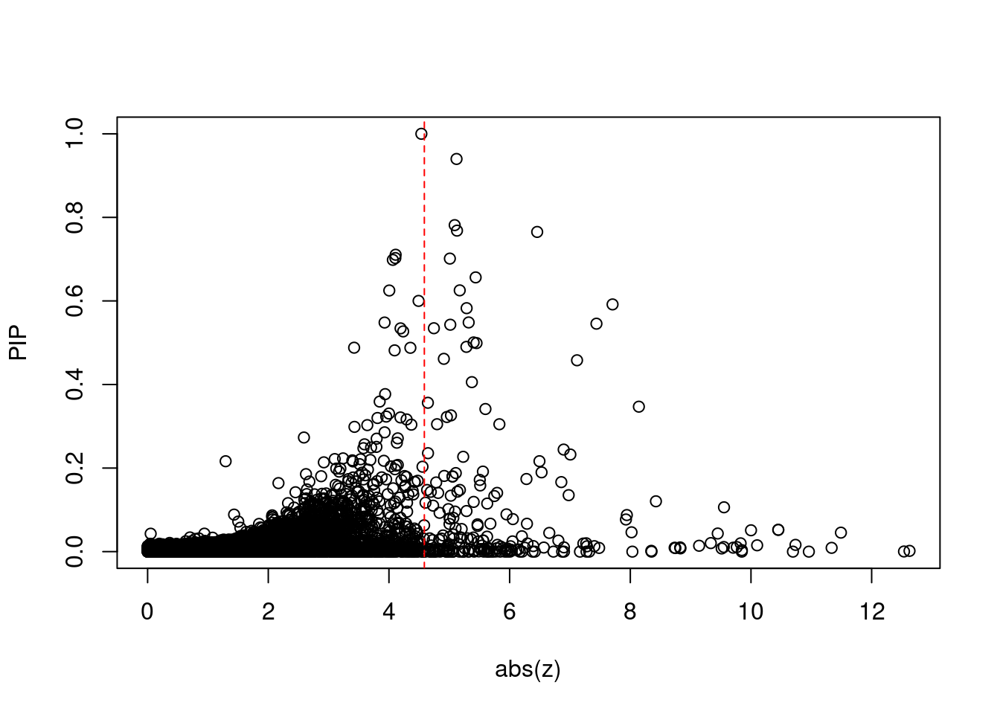
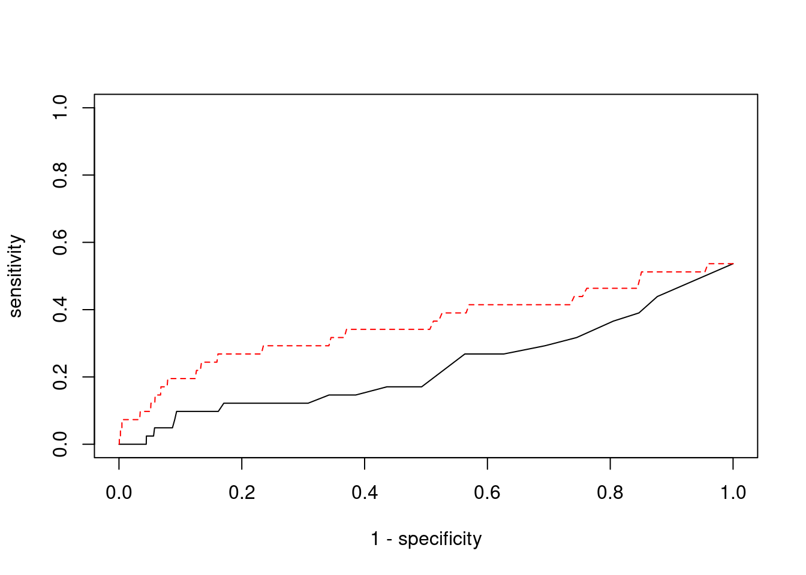

Last updated: 2022-02-13
Checks: 6 1
Knit directory: cTWAS_analysis/
This reproducible R Markdown analysis was created with workflowr (version 1.6.2). The Checks tab describes the reproducibility checks that were applied when the results were created. The Past versions tab lists the development history.
Great! Since the R Markdown file has been committed to the Git repository, you know the exact version of the code that produced these results.
Great job! The global environment was empty. Objects defined in the global environment can affect the analysis in your R Markdown file in unknown ways. For reproduciblity it’s best to always run the code in an empty environment.
The command set.seed(20211220) was run prior to running the code in the R Markdown file. Setting a seed ensures that any results that rely on randomness, e.g. subsampling or permutations, are reproducible.
Great job! Recording the operating system, R version, and package versions is critical for reproducibility.
Nice! There were no cached chunks for this analysis, so you can be confident that you successfully produced the results during this run.
Using absolute paths to the files within your workflowr project makes it difficult for you and others to run your code on a different machine. Change the absolute path(s) below to the suggested relative path(s) to make your code more reproducible.
| absolute | relative |
|---|---|
| /project2/xinhe/shengqian/cTWAS/cTWAS_analysis/data/ | data |
| /project2/xinhe/shengqian/cTWAS/cTWAS_analysis/code/ctwas_config.R | code/ctwas_config.R |
Great! You are using Git for version control. Tracking code development and connecting the code version to the results is critical for reproducibility.
The results in this page were generated with repository version eb13ecf. See the Past versions tab to see a history of the changes made to the R Markdown and HTML files.
Note that you need to be careful to ensure that all relevant files for the analysis have been committed to Git prior to generating the results (you can use wflow_publish or wflow_git_commit). workflowr only checks the R Markdown file, but you know if there are other scripts or data files that it depends on. Below is the status of the Git repository when the results were generated:
Ignored files:
Ignored: .ipynb_checkpoints/
Untracked files:
Untracked: code/.ipynb_checkpoints/
Untracked: code/AF_out/
Untracked: code/BMI_out/
Untracked: code/T2D_out/
Untracked: code/ctwas_config.R
Untracked: code/mapping.R
Untracked: code/out/
Untracked: code/run_AF_analysis.sbatch
Untracked: code/run_AF_analysis.sh
Untracked: code/run_AF_ctwas_rss_LDR.R
Untracked: code/run_BMI_analysis.sbatch
Untracked: code/run_BMI_analysis.sh
Untracked: code/run_BMI_ctwas_rss_LDR.R
Untracked: code/run_T2D_analysis.sbatch
Untracked: code/run_T2D_analysis.sh
Untracked: code/run_T2D_ctwas_rss_LDR.R
Untracked: data/.ipynb_checkpoints/
Untracked: data/AF/
Untracked: data/BMI/
Untracked: data/T2D/
Untracked: data/UKBB/
Untracked: data/UKBB_SNPs_Info.text
Untracked: data/gene_OMIM.txt
Untracked: data/gene_pip_0.8.txt
Untracked: data/mashr_Heart_Atrial_Appendage.db
Untracked: data/summary_known_genes_annotations.xlsx
Untracked: data/untitled.txt
Note that any generated files, e.g. HTML, png, CSS, etc., are not included in this status report because it is ok for generated content to have uncommitted changes.
These are the previous versions of the repository in which changes were made to the R Markdown (analysis/BMI_Brain_Hypothalamus.Rmd) and HTML (docs/BMI_Brain_Hypothalamus.html) files. If you’ve configured a remote Git repository (see ?wflow_git_remote), click on the hyperlinks in the table below to view the files as they were in that past version.
| File | Version | Author | Date | Message |
|---|---|---|---|---|
| Rmd | eb13ecf | sq-96 | 2022-02-13 | update |
| html | e6bc169 | sq-96 | 2022-02-13 | Build site. |
| Rmd | 87fee8b | sq-96 | 2022-02-13 | update |
[1] 11083
1 2 3 4 5 6 7 8 9 10 11 12 13 14 15 16
1107 757 667 439 549 622 531 429 416 429 660 610 213 357 369 492
17 18 19 20 21 22
680 168 851 327 134 276 [1] 8872[1] 0.8005053
********************************************************Note: As of version 1.0.0, cowplot does not change the default ggplot2 theme anymore. To recover the previous behavior, execute:
theme_set(theme_cowplot())********************************************************
| Version | Author | Date |
|---|---|---|
| e6bc169 | sq-96 | 2022-02-13 |
gene snp
0.0049608595 0.0002982899 gene snp
15.52429 17.75596 [1] 336107[1] 11083 7535010 gene snp
0.002539502 0.118737825 [1] 0.01272065 15.93546282
| Version | Author | Date |
|---|---|---|
| e6bc169 | sq-96 | 2022-02-13 |
genename region_tag susie_pip mu2 PVE z
7493 PPM1M 3_36 0.9999998 244.75253 7.281981e-04 4.537140
3276 CCND2 12_4 0.9397782 28.25790 7.901103e-05 -5.119990
7598 ZNF12 7_9 0.7814221 26.90490 6.255175e-05 5.089286
7840 ALKBH3 11_27 0.7683120 28.49878 6.514579e-05 -5.127700
13153 RP11-1109F11.3 12_54 0.7651666 30.71378 6.992166e-05 6.456677
8379 CENPX 17_46 0.7105395 23.78657 5.028547e-05 4.110746
8812 RARG 12_33 0.7026347 25.49150 5.329022e-05 -4.106087
241 ISL1 5_30 0.7013735 26.15680 5.458288e-05 -5.009605
7356 SERPINI1 3_103 0.6982908 23.16012 4.811711e-05 -4.064505
4821 DCAF7 17_38 0.6563408 30.15661 5.888902e-05 5.436897
3176 PRRC2C 1_84 0.6252925 28.14482 5.236055e-05 -5.172951
584 NGFR 17_29 0.6249642 28.07281 5.219916e-05 -4.005394
11412 NCKIPSD 3_34 0.6000790 26.29681 4.694983e-05 4.490993
13194 CTC-498M16.4 5_52 0.5916685 52.94952 9.321009e-05 7.705884
5798 ECE2 3_113 0.5826731 28.51559 4.943445e-05 -5.287344
5712 THSD7B 2_81 0.5485336 27.38466 4.469233e-05 5.321314
11611 HRAT92 7_1 0.5483159 24.30683 3.965351e-05 -3.927490
7806 R3HCC1L 10_62 0.5455598 39.54709 6.419177e-05 7.438889
5498 CARM1 19_9 0.5430815 32.91258 5.318013e-05 5.016317
155 CSDE1 1_71 0.5346700 22.41865 3.566298e-05 -4.744544
num_eqtl
7493 2
3276 1
7598 2
7840 2
13153 1
8379 2
8812 1
241 1
7356 1
4821 1
3176 1
584 2
11412 1
13194 1
5798 1
5712 1
11611 2
7806 1
5498 1
155 1
| Version | Author | Date |
|---|---|---|
| e6bc169 | sq-96 | 2022-02-13 |
genename region_tag susie_pip mu2 PVE z
7665 CCDC171 9_13 0.000000e+00 50550.12 0.000000e+00 8.034327
8735 NEGR1 1_46 0.000000e+00 43383.72 0.000000e+00 -10.695227
9420 STX19 3_59 0.000000e+00 31106.49 0.000000e+00 -5.059656
7889 LEO1 15_21 4.127809e-13 27969.54 3.435005e-14 4.602678
5271 MFAP1 15_16 0.000000e+00 23764.59 0.000000e+00 4.302998
13397 LINC02019 3_35 1.110223e-15 22551.06 7.449028e-17 -4.467972
5098 TMOD3 15_21 0.000000e+00 22268.83 0.000000e+00 5.411998
4029 TMOD2 15_21 0.000000e+00 21601.60 0.000000e+00 5.231719
1293 WDR76 15_16 0.000000e+00 21486.56 0.000000e+00 4.740358
11601 CKMT1A 15_16 0.000000e+00 21284.13 0.000000e+00 4.129652
2876 CISH 3_35 0.000000e+00 20260.39 0.000000e+00 -3.798838
3017 PLCL1 2_117 0.000000e+00 18664.08 0.000000e+00 -5.641781
1015 CCNT2 2_80 1.554312e-15 18644.85 8.622231e-17 3.685900
2875 HEMK1 3_35 0.000000e+00 17517.21 0.000000e+00 -3.881751
4998 TUBGCP4 15_16 0.000000e+00 16916.45 0.000000e+00 3.431538
9416 DHFR2 3_59 0.000000e+00 16605.15 0.000000e+00 2.760649
9414 NSUN3 3_59 0.000000e+00 15678.49 0.000000e+00 4.755360
8261 ADAL 15_16 0.000000e+00 14821.09 0.000000e+00 -2.861302
125 CACNA2D2 3_35 0.000000e+00 14198.82 0.000000e+00 -4.008712
5136 CNOT6L 4_52 0.000000e+00 14094.61 0.000000e+00 3.421551
num_eqtl
7665 2
8735 2
9420 1
7889 1
5271 1
13397 2
5098 1
4029 1
1293 2
11601 1
2876 1
3017 1
1015 1
2875 1
4998 1
9416 2
9414 1
8261 1
125 1
5136 1 genename region_tag susie_pip mu2 PVE z
7493 PPM1M 3_36 0.99999983 244.75253 7.281981e-04 4.537140
2953 LANCL1 2_124 0.04150332 4670.09050 5.766743e-04 -3.714167
9392 FAM220A 7_8 0.21633910 445.76487 2.869216e-04 -1.293295
13194 CTC-498M16.4 5_52 0.59166851 52.94952 9.321009e-05 7.705884
4791 RAC1 7_8 0.15841126 178.70493 8.422577e-05 -5.512237
2896 SPCS1 3_36 0.08081493 348.59408 8.381738e-05 -5.066891
3276 CCND2 12_4 0.93977817 28.25790 7.901103e-05 -5.119990
13153 RP11-1109F11.3 12_54 0.76516663 30.71378 6.992166e-05 6.456677
12160 ATP5J2 7_62 0.45795733 50.81152 6.923244e-05 -7.116991
2926 ITGB6 2_96 0.49914478 45.97271 6.827301e-05 5.451232
7840 ALKBH3 11_27 0.76831199 28.49878 6.514579e-05 -5.127700
7806 R3HCC1L 10_62 0.54555981 39.54709 6.419177e-05 7.438889
7598 ZNF12 7_9 0.78142209 26.90490 6.255175e-05 5.089286
13639 DHRS11 17_22 0.34692049 60.57451 6.252336e-05 -8.142012
4821 DCAF7 17_38 0.65634080 30.15661 5.888902e-05 5.436897
241 ISL1 5_30 0.70137346 26.15680 5.458288e-05 -5.009605
8812 RARG 12_33 0.70263472 25.49150 5.329022e-05 -4.106087
5498 CARM1 19_9 0.54308147 32.91258 5.318013e-05 5.016317
3176 PRRC2C 1_84 0.62529253 28.14482 5.236055e-05 -5.172951
584 NGFR 17_29 0.62496421 28.07281 5.219916e-05 -4.005394
num_eqtl
7493 2
2953 2
9392 1
13194 1
4791 4
2896 1
3276 1
13153 1
12160 1
2926 1
7840 2
7806 1
7598 2
13639 1
4821 1
241 1
8812 1
5498 1
3176 1
584 2 genename region_tag susie_pip mu2 PVE z
7489 MST1R 3_35 1.814174e-03 1050.66826 5.671095e-06 -12.627554
38 RBM6 3_35 3.575409e-04 906.71176 9.645337e-07 12.536042
9046 KCTD13 16_24 4.543363e-02 109.27774 1.477174e-05 -11.490673
9045 ASPHD1 16_24 9.053323e-03 101.20568 2.726060e-06 -11.336675
7484 RNF123 3_35 4.940603e-12 823.15719 1.210000e-14 -10.959165
6178 TAOK2 16_24 1.619349e-02 92.70010 4.466252e-06 10.737701
8735 NEGR1 1_46 0.000000e+00 43383.71612 0.000000e+00 -10.695227
11930 NPIPB7 16_23 5.217439e-02 86.00817 1.335118e-05 10.452595
10430 CLN3 16_23 5.217439e-02 86.00817 1.335118e-05 10.452595
8365 INO80E 16_24 1.515007e-02 78.23179 3.526309e-06 10.102104
8032 ZNF646 16_24 5.107933e-02 75.83587 1.152504e-05 -10.000364
5486 SAE1 19_33 3.540535e-03 97.45885 1.026627e-06 9.848747
7487 CAMKV 3_35 3.330669e-16 1446.63894 1.433554e-18 9.847856
2753 COL4A3BP 5_44 1.986762e-02 68.98511 4.077779e-06 -9.828145
458 PRSS8 16_24 1.089810e-02 70.69376 2.292210e-06 -9.764760
1830 KAT8 16_24 9.420617e-03 68.77957 1.927797e-06 -9.705982
11411 LAT 16_23 1.060996e-01 82.99715 2.619989e-05 -9.552834
8031 ZNF668 16_24 1.101252e-02 70.05297 2.295281e-06 9.549888
2458 MTCH2 11_29 7.571534e-03 81.32046 1.831918e-06 -9.514152
10711 SULT1A2 16_23 4.339290e-02 80.36465 1.037543e-05 -9.448875
num_eqtl
7489 2
38 1
9046 1
9045 2
7484 1
6178 1
8735 2
11930 1
10430 1
8365 2
8032 1
5486 1
7487 1
2753 1
458 1
1830 1
11411 1
8031 2
2458 1
10711 2
| Version | Author | Date |
|---|---|---|
| e6bc169 | sq-96 | 2022-02-13 |

| Version | Author | Date |
|---|---|---|
| e6bc169 | sq-96 | 2022-02-13 |
[1] 0.02012091 genename region_tag susie_pip mu2 PVE z
7489 MST1R 3_35 1.814174e-03 1050.66826 5.671095e-06 -12.627554
38 RBM6 3_35 3.575409e-04 906.71176 9.645337e-07 12.536042
9046 KCTD13 16_24 4.543363e-02 109.27774 1.477174e-05 -11.490673
9045 ASPHD1 16_24 9.053323e-03 101.20568 2.726060e-06 -11.336675
7484 RNF123 3_35 4.940603e-12 823.15719 1.210000e-14 -10.959165
6178 TAOK2 16_24 1.619349e-02 92.70010 4.466252e-06 10.737701
8735 NEGR1 1_46 0.000000e+00 43383.71612 0.000000e+00 -10.695227
11930 NPIPB7 16_23 5.217439e-02 86.00817 1.335118e-05 10.452595
10430 CLN3 16_23 5.217439e-02 86.00817 1.335118e-05 10.452595
8365 INO80E 16_24 1.515007e-02 78.23179 3.526309e-06 10.102104
8032 ZNF646 16_24 5.107933e-02 75.83587 1.152504e-05 -10.000364
5486 SAE1 19_33 3.540535e-03 97.45885 1.026627e-06 9.848747
7487 CAMKV 3_35 3.330669e-16 1446.63894 1.433554e-18 9.847856
2753 COL4A3BP 5_44 1.986762e-02 68.98511 4.077779e-06 -9.828145
458 PRSS8 16_24 1.089810e-02 70.69376 2.292210e-06 -9.764760
1830 KAT8 16_24 9.420617e-03 68.77957 1.927797e-06 -9.705982
11411 LAT 16_23 1.060996e-01 82.99715 2.619989e-05 -9.552834
8031 ZNF668 16_24 1.101252e-02 70.05297 2.295281e-06 9.549888
2458 MTCH2 11_29 7.571534e-03 81.32046 1.831918e-06 -9.514152
10711 SULT1A2 16_23 4.339290e-02 80.36465 1.037543e-05 -9.448875
num_eqtl
7489 2
38 1
9046 1
9045 2
7484 1
6178 1
8735 2
11930 1
10430 1
8365 2
8032 1
5486 1
7487 1
2753 1
458 1
1830 1
11411 1
8031 2
2458 1
10711 2[1] 41[1] 22[1] 4.586313[1] 2[1] 223 genename region_tag susie_pip mu2 PVE z num_eqtl
7493 PPM1M 3_36 0.9999998 244.7525 0.0007281981 4.53714 2 ctwas TWAS
0.00000000 0.07317073 ctwas TWAS
0.9998192 0.9801103 ctwas TWAS
0.00000000 0.01345291 
| Version | Author | Date |
|---|---|---|
| e6bc169 | sq-96 | 2022-02-13 |
sessionInfo()R version 3.6.1 (2019-07-05)
Platform: x86_64-pc-linux-gnu (64-bit)
Running under: Scientific Linux 7.4 (Nitrogen)
Matrix products: default
BLAS/LAPACK: /software/openblas-0.2.19-el7-x86_64/lib/libopenblas_haswellp-r0.2.19.so
locale:
[1] LC_CTYPE=en_US.UTF-8 LC_NUMERIC=C
[3] LC_TIME=en_US.UTF-8 LC_COLLATE=en_US.UTF-8
[5] LC_MONETARY=en_US.UTF-8 LC_MESSAGES=en_US.UTF-8
[7] LC_PAPER=en_US.UTF-8 LC_NAME=C
[9] LC_ADDRESS=C LC_TELEPHONE=C
[11] LC_MEASUREMENT=en_US.UTF-8 LC_IDENTIFICATION=C
attached base packages:
[1] stats graphics grDevices utils datasets methods base
other attached packages:
[1] readxl_1.3.1 cowplot_1.0.0 ggplot2_3.3.5 workflowr_1.6.2
loaded via a namespace (and not attached):
[1] tidyselect_1.1.1 xfun_0.29 purrr_0.3.4 colorspace_2.0-2
[5] vctrs_0.3.8 generics_0.1.1 htmltools_0.5.2 yaml_2.2.1
[9] utf8_1.2.2 blob_1.2.2 rlang_0.4.12 jquerylib_0.1.4
[13] later_0.8.0 pillar_1.6.4 glue_1.5.1 withr_2.4.3
[17] DBI_1.1.1 bit64_4.0.5 lifecycle_1.0.1 stringr_1.4.0
[21] cellranger_1.1.0 munsell_0.5.0 gtable_0.3.0 evaluate_0.14
[25] memoise_2.0.1 labeling_0.4.2 knitr_1.36 fastmap_1.1.0
[29] httpuv_1.5.1 fansi_0.5.0 highr_0.9 Rcpp_1.0.7
[33] promises_1.0.1 scales_1.1.1 cachem_1.0.6 farver_2.1.0
[37] fs_1.5.2 bit_4.0.4 digest_0.6.29 stringi_1.7.6
[41] dplyr_1.0.7 rprojroot_2.0.2 grid_3.6.1 tools_3.6.1
[45] magrittr_2.0.1 tibble_3.1.6 RSQLite_2.2.8 crayon_1.4.2
[49] whisker_0.3-2 pkgconfig_2.0.3 ellipsis_0.3.2 data.table_1.14.2
[53] assertthat_0.2.1 rmarkdown_2.11 R6_2.5.1 git2r_0.26.1
[57] compiler_3.6.1